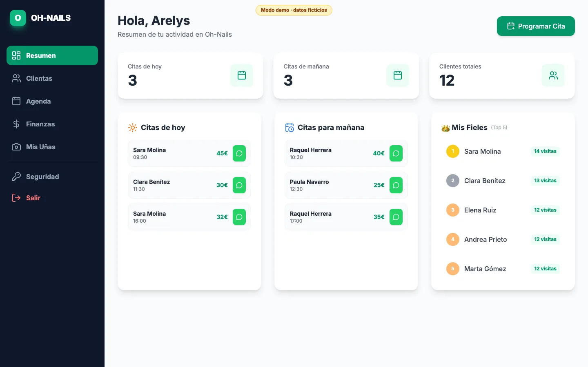

En producciónProyecto final DAM · Backend
Boutique Market
Sistema de gestión multi-tenant que usan a diario dos negocios familiares reales —un salón de manicura y una pollería—, con una API en Node.js y una base de datos aislada para cada uno.
Detalles técnicos
- Aislamiento multi-tenant con
AsyncLocalStorage: el contexto de cada negocio viaja con la petición, sin fugas de datos entre peticiones. - Seguridad por capas: JWT,
bcrypt, cifradoAES-256,Helmety rate limiting. - 44 endpoints REST documentados con Swagger, validación con
Zod, tests con Jest + Supertest y entorno completo con Docker Compose.